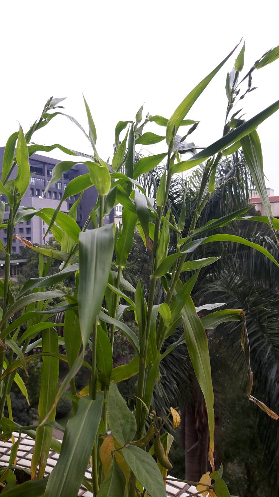

| 編號 | 照片 | 名稱 | |
| 01 |  |
俗名 | 紅藜Red Quinoa |
| 原住民語 | mukundjulistjulisdulibaaeba'ekowal | ||
| 學名 | Chenopodium formosanum | ||
| 科屬 | 莧科藜亞科藜屬 | ||
| 簡介 | 台灣原生種植物。紅藜是藜麥家族中的台灣原生種，是原住民百年以上的傳統作物，其為一年生草本植物，植株生長強健、耐旱性極佳，花穗多彩美麗，種子飽含高量的營養成份。穀粒被稱「料理界的紅寶石」、「穀物的紅寶石」。 | ||
| 植物型態 | 台灣紅藜在生長過程中千變萬化，葉子從嫩綠到綠→鮮綠→鮮紅→暗紫→金黃→到夕陽紅，成熟植株高度大約 150 公分到 200 公分，對環境的適應性頗高，在亞熱帶地 一 年 四 季 均 可 生 長 。 花穗豔麗，有黃、橙、紅、紫…等色彩。種子含有高量的蛋白質、澱粉、膳食纖維及有機礦物質硒、鋅及鍺…等。 | ||
| 原民文化意義 | 紅藜是台灣原住民的傳統作物，成熟時優雅彎腰的穗，有著絢麗的色彩，紅藜成熟期整株轉成吉利討喜的紅色，是原住民豐年祭等重要慶典不可或缺的裝飾配件。根據原住民習俗：紅藜可以製成花環，在喜慶日子讓女生穿戴 ，但男生是不可以穿戴任何花環。在魯凱族傳統栽培作物中，紅藜會用於編織成環飾。 台灣紅蔾是原住民自古傳統主食之一，種植、採收都必須配合祭儀，方能繼續進行相關農事以及煮食。 | ||
| 用途 | 紅藜含天然皂素，種在小米旁可保護小米，免被蟲鳥啄食。在台灣，紅藜為原住民傳統的糧食作物，多與稻米、糯米或芋頭共煮，成為粽子、竹筒飯，或供作為釀製小米酒的酒麴原料。 | ||
| 編號 | 照片 | 名稱 | |
| 02 |  | 俗名 | 薏苡、川谷、回回來、草珠兒、薏米珠、鴨母珠、菩提子、唸珠子 |
| 原住民語 | TitibunKatiai(Gcyai)AcocohePohetutaFafagaluTalacilaciaBokusika-cipulungqaihasVutai | ||
| 學名 | Coix lacryma-jobi L. | ||
| 科屬 | 禾本科(Gramineae)玉米族(Tripasacea)薏苡屬(Coix) | ||
| 簡介 | 生於山野溪畔的野生植物，為屬之一年或多年生草本植物，原產於以印度為中主之熱帶亞洲。薏苡，生於山野溪畔的野生植物，為一(多)年生禾本科薏苡(Coix)屬植物，外觀看似玉蜀黍，喜溫暖濕潤的氣候，每年約3~4月時播種，9~12月可陸續採收，採收下的種子在台灣又稱「薏米珠」，剛開始長出來是綠色，接著就會慢慢變成各種不同的顏色，如：黑色、咖啡色、淡褐色、白色或灰色等。薏苡植物的根、莖、葉可作為家畜飼料，其種子因種類不同，有些製成手工藝品，部分常拿來食用，如紅科薏苡，經過特殊的處理過程後，即變成我們日常生活中常食用的薏仁。 | ||
| 植物型態 | 為一年生或多年生草本，莖桿直立，高約 1~1.5公尺，約 10 節，分蘗成叢生。葉片寬闊而呈披針形，長 15~40 公分，寬 1.5~3 公分，基部寬心形，先端漸尖形，葉鞘抱莖，表面光滑，頂端具葉舌，質硬，長約 0.1 公分，邊緣粗糙，中脈粗厚，互生。總狀花序在腋生，成束；花序分雌雄兩種小穗，雄性小穗生在頂端，開花後即凋謝；雌小穗位於花序下部，外面包以骨質念珠狀的總苞，花序半直立或下垂狀，可達 8 公分餘；能育小穗第一穎下部膜質，上部厚紙質，先端鈍；第二穎舟形，被包於第一穎中，上端厚紙質，漸尖形；第二外穎短於第一外稃，內稃與外稃相似而較短小；雄蕊 3 枚，退化；雌蕊柱細長；不育小穗退化成長圓筒狀之穎；雄小穗 2~3 枚生於一節，第一穎扁平，兩側翼狀，先端鈍，脈紋明顯；第二穎舟形，脈紋明顯；外稃與內稃均為薄膜質；雄蕊 3 枚。穎果外包堅硬總苞，卵形或卵狀球形。 | ||
| 原民文化意義 | 賽夏族有則傳說，相傳在古老的年代，各族群是不能通婚，但泰雅少年遇見賽夏少女，彼此仰慕著，卻因害怕受到詛咒，不敢牽動內心的情愫。泰雅少年將薏苡珠放在少女的手心，告訴少女，當物換星移，來生必再相遇，薏苡珠遂成了相逢的信物。 阿美族的飾物常是具有巫術的性質，早期族人只在豐年祭前採摘薏苡串珠成項鍊，於豐年祭的第一天由祭司佩帶以祭拜祖靈，平時也只有巫師佩帶有驅邪的作用，一般族人都以邪物看待，並不會去佩帶它，故有「鬼珠」之說。但西方文化及宗教進入部落後，一些原有的信仰和傳統觀念，也逐漸的改變，後來，薏苡項鍊便成為人人可佩帶的飾物之一。 臺灣原住民族使用薏苡植物較多的族群，如賽夏族（裝飾及信仰）、達悟（雅美）族（裝飾）、泰雅族（裝飾）及阿美族（裝飾及信仰）等。珠串是阿美族婦女過去最重要的隨身飾品，用薏苡種子串成阿美族珠串能代表其身份地位。此外薏苡珠是阿美族巫師所佩帶的飾品，認為薏苡珠是有驅邪的作用。薏苡串珠項鍊為太魯閣族婦女的最愛，每到節慶或是文化活動時婦女們都會戴著這些飾品，其意義代表美麗、貞節、平安及幸運。 | ||
| 用途 | (1) 食用：種子及嫩芽供食用；種實可以混米煮粥，且可磨粉，製成麵包、糕餅。 (2) 藥用：性味：種仁：甘、淡、涼；效用：薏苡仁：健脾滲濕除痹止瀉，清熱排膿。治水腫，腳氣，小便淋痛不利，溼痹拘攣，脾虛泄瀉，肺癰，腸癰，扁平疣，鎮咳，抗癌；根；鎮痛，解熱。治肺結核，胃癌、清熱、補肺等功效。還可治風濕性關節炎、治夜盲症、治消化不良及輔助抑制腫瘤的功效；根可製成驅蟲、鎮痛藥。 |
||
| 編號 | 照片 | 名稱 | |
| 03 |  |
俗名 | 麵包樹、麵包果、羅蜜樹、馬檳榔、麵磅樹 |
| 原住民語 | cipohovacilol | ||
| 學名 | Artocarpus altilis | ||
| 科屬 | 桑科桂木屬 | ||
| 簡介 | 原產於馬來半島以及波里尼亞，如今因人類傳播而分布玻里尼西亞，印度南部，加勒比地區等熱帶地區。果實可食用，外型類似麵包，因此而得名，樹長可達2公尺以上。麵包樹是熱帶地區的重要食物，原產於馬來群島。麵包果樹種植於世界各地的熱帶區域，特別是太平洋地區。樹形美觀，枝葉濃密，種植於庭園，可美化環境及遮蔭。麵包果樹屬常綠喬木，樹葉呈長橢圓形，面積頗為寬大，大號的樹葉可當扇子搧涼，早期當做包裹東西使用或粿粄糕餅的墊底。因為據說是由阿美族的祖先，乘小木船由海外把種子帶回來，在台灣東部種植，再逐漸擴展到全省各地。原住民阿美族的同胞就叫它是apalo (阿巴魯)。 | ||
| 植物型態 | 麵包樹是屬於桑科的常綠大喬木。 葉片極大，互生，表面為革質，正面或反面皆光滑，而且葉脈明顯，肥厚質地如紙。葉形有點像是一個橢圓的巨蛋，前端比較尖銳，底部略呈心形，羽狀深裂的葉子，呈深綠色，富有光澤。葉長約25~50cm，全緣或具3~9裂片；托葉呈苞狀。 花為單性聚合花，雌雄同株異花，雄花棍棒狀，為柔夷花序；雌花花序生於雄花序上端，開放較遲，類似球形。花小，顏色不明顯。 果肉呈白色，海棉質，富含纖維素及澱粉，可以熟食。成熟時會從樹上掉落。每粒果實的種子約30～80粒，藏於果肉中。 | ||
| 校園位置 | 圖資館一樓旁之外牆邊。 | ||
| 原民文化意義 | 台灣地區麵包樹目前普遍栽植於蘭嶼島及東部地區，雅美人稱之為cipoho (木材黃色之意)，阿美族人稱之為vacilol ，其它族群則尚未有該種植物的傳統俗名。雅美族人栽植麵包樹於父系群的林地內，與台東龍眼、毛柿、大葉山欖、蘭嶼赤楠等樹種混植，偶而摘取果實水煮食用。其通直的樹幹是建造傳統住屋或製做雅美船中上層船板的主要材料，一塊船板需砍一棵種植約15至20年的大樹；如果有良好板根的麵包樹，則是製做為雅美船最上層船板(pakalateng)的最佳素材；其板根亦可用來製作盛裝食物的木盤；另外一個重要的用途，就是砍取胸徑約60公分，生長約30年以上的樹幹，用來製做樁打小米的臼。其它的用途，則僅見朗島村於小船招魚祭時，摘取麵包樹的葉片置於漁網網袋內，懸掛於飛魚架上祈求豐魚，並於飛魚季期間水煮飛魚時，撕下一小片的麵包樹葉片，放入鍋中一起與飛魚共煮，以祈求不小心觸犯飛魚禁忌時，得以解厄。 阿美族人一樣很喜歡種麵包樹，但僅栽植一、兩株於庭院、田園空地上，主要做為乘涼及採摘果實之用。其雌株每年夏季結出大如橄欖球的果實，等到即將成熟的時候，摘下來削去外皮水煮當蔬菜佐餐食用，食用的情形比雅美族人普遍，這種吃法和稱呼(vacilol法雞露了)，幾乎成了台灣各族群的普遍用語。閒暇之餘，阿美族人偶而會割裂麵包樹的樹皮，將其乳白色的汁液，取來做為黏膠或拿給小孩子當零嘴咀嚼，就像口香糖一般。 | ||
| 用途 | 麵包樹除了其巨大的果實供食用外，它的木材輕而且耐用，具有耐白蟻和海蟲的特性，因此廣泛的運用在建屋與造船上。在薩摩亞(Samoa)，最好的房子，尤其是屋頂，使用麵包樹的木材如果避免直接淋雨的話，可持續使用50年。小船幾乎全由麵包樹製作而成，大船主要的船身在不同的島嶼有不同的形式。艙面船室、船的邊緣、船艄、船尾和其它部位，都是以麵包樹材做成的；麵包樹的汁液則被用來填充船的隙縫使其不漏水。在玻里尼西亞，麵包樹的汁液普遍的運用於捕捉小鳥充當食物或取其羽毛。 麵包樹另一項重要的資源，就是製作繩索及樹皮布。用來製做樹皮布的樹種，如構樹、榕樹等，多半砍取較年輕或剛生長出來的枝條；唯獨麵包樹例外，大麵包樹的樹皮才能做樹皮布。在大溪地，良好的麵包樹皮布是獻給皇家值錢的禮物。John Jenkin(1855)曾在其訪問大溪地的時候，看到一綑長150公尺寬1公尺的樹皮布。 此外麵包樹果實之風味類似麵包，因此稱為麵包果，除了果肉可食用外，其果核也可食用，滋味清淡，細加咀嚼之，有如吃花生米之鬆脆風味甚佳。果皮的表面密佈肉刺狀，外形橢圓，很像菠羅蜜，只是體積比菠羅蜜小，約五與一之比，熟果大約有鳳梨大小，外觀看起來彷彿是菠蘿蜜的縮小版，所以很多人誤以為麵包果就是菠蘿蜜。成熟的麵包果果皮呈黃綠色，果肉疏鬆味甜，富含澱粉、醣、鈣、磷、維生素A、維生素B、食用纖維素等豐富的營養成分，不論炒、煮、燒或做甜點等均可。 麵包果可以炒，也可煮湯，大部份會料理麵包果的家庭都是拿麵包果和小魚干一起搭配煮湯，煮出來的湯風味清淡可口別有風味，除了喝湯吃果肉外之外，也可以將種子咬破，吃裡面的果核，果核的味道有點像花生。 | ||
| 編號 | 照片 | 名稱 | |
| 04 |  |
俗名 | 林投、菻荼、露兜樹、華露兜、野菠蘿、假菠蘿 |
| 原住民語 | 'Ango | ||
| 學名 | Pandanus tectorius | ||
| 科屬 | 露兜樹科露兜樹屬 | ||
| 簡介 | 原產於馬來界，澳大利亞東部及太平洋三大島群。海邊的「樹生鳳梨」-林投 主要分布在華南及台灣地區。而在台灣，包括離島，幾乎是沿著海邊就可以看到它，蘭嶼更是全島四處可見。林投種子包在一層厚厚纖維內，果實輕，可以浮在水上並防止海水直接接觸種子。這種奇妙設計，可以讓林投隨著海洋洋流，跟著潮汐的起伏，在一個島嶼，又一個島嶼的傳播著。林投樹的樹莖上，會長出一些「氣生根」，這些氣生根像是強力的吸水管，能直接吸收空氣中的水蒸氣，使林投樹在完全沒有淡水的供應下，仍能生存下來。氣生根，進入土地後，就成為「支柱根」。林投樹在海風與海浪的雙重侵襲，不僅能夠毅立不搖，而且能夠把樹邊的砂子，一粒一粒的保留下來，是海邊最好防風林，捍衛土地不讓海浪帶走。馬來西亞人用林投的樹葉編帽子，印尼的女人用林投的花插在髮上當裝飾，印度的人把林投的果實泡水，當做甜湯喝，紐西蘭的毛利人取林投的莖芽當菜吃 | ||
| 植物型態 | 多年生常綠性的大型灌木（可達3~5公尺高），多數是直立型，但植株成長後的分枝，往往兩兩纏繞，呈現半蔓藤現象，再加上它的氣生根（或稱不定根）很多，所以林投常常一長就長成一大片。林投的葉子是以螺旋狀排列方式聚生在枝條的頂端，葉片下垂還有些彎曲；而它的葉片是像劍一樣細長，除了葉子邊緣有硬鋸齒外，葉背面的中肋部分也有硬鋸齒。 由於露兜樹科的植物都是雌雄異株而且是屬於佛焰花序（或稱肉穗花序），林投當然也不例外，不過它的雌花、雄花可都是長在枝條的頂端且佛焰苞也都是呈淺黃或是乳白色的。林投的雄花穗往往是下垂的，花絲也是癒合在一起；雌花穗則是直立，即使受粉後仍是直立，不過顏色則由乳白色轉為橄欖綠。林投的果實是由多枚有稜角的乾果聚集在一起，往往是圓球形（有些成熟時直徑可達公分）；隨著果實的成熟，顏色也會由橄欖綠轉為橘紅色，這時往往因為太重而下垂 | ||
| 原民文化意義 | 食用： 東部居住的原住民族群，普遍都認為林投的嫩莖心可煮來當菜吃。阿美族人將林投心煮爛後配花生，獻給對家庭付出最多的媽媽吃，甚至成為阿美族「十心菜」的主要成員。噶瑪蘭族人會用鹽巴將林投心搓一搓，再當涼拌菜吃。林投果可生食，噶瑪蘭族人會將之一粒粒撥下當零嘴吃；達悟族人則會將果實撥粒後，與地瓜一起煮湯，用來慰勞父兄的辛勞 | ||
| 用途 | 食具：
撒奇拉雅族人早期男士上山工作時需要便當，使用於便當盒的材料是經過祖先不斷測試演變：從麵包樹、檳榔到林投葉。麵包樹葉中午便當會反潮、檳榔葉會讓食物吃起來辣辣的，最後選定林投葉包裹成撒奇拉雅族人傳統的便當(alibongbong) 居住： 撒奇拉雅族人用林投植株當籬笆，用來防小偷；噶瑪蘭族人種來當擋風牆，可在海邊種菜；排灣族人種林投當綠籬阻隔內外；阿美族人用來當作田區的邊界。達悟族人也是如此，利用林投枝幹編織成圍籬。 藥用： 達悟族人拿林投的果實來熬湯，加蜂蜜後食用。用來降火氣。 噶瑪蘭族與其他原住民族族群一樣，非常善於使用大自然的材料，像在海邊的林投樹，摘取它們的葉子，去掉刺就能作為編織的材料，做出生活用具，也可以做出許多童玩。 噶瑪蘭族人會利用林投葉進行編織，必須選擇生長狀態良好、沒有乾枯或扭曲折斷的林投葉做為材料，先將一片片長條形狀的葉片割下，接著刮除葉片兩緣的尖刺，再將葉片分裁成兩片，才好的葉片清洗乾淨瀝乾後就可以拿來編織。利用簡單的交織鞭法，編出底部、身部及口緣，葉片分為兩組四片，以各組平行相交進行編織，網上編成長方體，至口緣的地方，兩端各留下四個葉片，就完成了殼子，將殼子裡裝完米飯、鹹豬肉之後，將口緣收口，使內容物不會溢出，最後將未編完的葉片剪到適當的長度留於左右兩端，即完成編織工作，噶瑪蘭人稱這個為qudibunbun，是早期族人出外攜帶的便當 |
||
| 編號 | 照片 | 名稱 | |
| 05 | 俗名 | 月桃 Beautiful Galangal or Shell-flower、草蔻、大草蔻、豔山薑、玉桃、良薑、草荳蔻、虎子花 | |
| 原住民語 | BassiyanGartoSalii | ||
| 學名 | Alpinia zerumbet | ||
| 科屬 | 薑科(Zingiberaceae)月桃屬(Alpinia) | ||
| 簡介 | 月桃之根莖部位具有芳香，常被利用當作為生薑的替代品。民間相傳，將月桃根莖部位煮湯服用後，具有排汗、利尿及減緩感冒症狀的功能，也可用於治療消化性潰瘍。原住民常見的使用方式，是將其根莖搗碎後敷治療腫傷或煎煮服用於熱病的治療。此外，我們對於月桃的認識還有葉子可以包糕粿、包粽子；黑色的種子外被白色膜質的假種皮，略帶芳香味，為製造仁丹之主要原料，亦可供做芳香健胃劑（仁丹可是超過百年的商品喔！）。此外，葉鞘曬乾編成帽子、草蓆，也可作編作繩索，甚至在日本也作為製紙的原料，真是一身是寶。 台灣特有種普萊氏月桃（Alpinia pricei；又叫短穗山薑）在發表於美國農業及食品化學期刊中的論文，並證實了普萊氏月桃在動物體內、外都有很好的抗發炎活性，萃取物可以調節植物的中樞神經系統。 | ||
| 植物型態 | 月桃為多年生草本，高 1~3 公尺。葉廣披針形，長 60~70 公分，寬 10~15 公分，葉緣生有細毛，葉鞘甚長。圓錐花序下垂性，長 20~30 公分，花漏斗狀，花萼管狀，花冠中的唇瓣大型而帶黃色，並具有紅點及條斑，雄蕊 3 枚，但有兩枚變成花瓣狀，只有一枚可孕性，雌蕊 1 枚，柱頭從雄蕊的花藥中鑽出。果實為蒴果，卵圓形，直徑約 2 公分，具有多數縱稜，頂端常冠以宿萼，熟時朱紅色；種子多數，藍黑或藍灰色，具有白色膜質的假種皮。果期：7~10月 | ||
| 原民文化意義 | 昔日農家用月桃莖狀的葉鞘，曬乾後編製成草蓆或做繩索；又用月桃葉包粽子 排灣族及魯凱族採用月桃的莖狀葉鞘，於花期前採收曬乾後，提取纖維以編織成繩索、置物藍、盤、簍、涼蓆或草蓆等編織品，北方澳漁民則編織成大繩索以綁鐵錨 在沒有彈簧床的時代，月桃編織的月桃蓆，是家裡必備的日用品；月桃蓆有冬暖夏涼的作用，也是魯凱族人一項獨特的手工藝品，除了月桃蓆，月桃還能編織細緻的籃子，嬰兒的搖籃、針線盒等；豐年祭中長串的粿「阿拜」，最外面的那層，用的就是月桃的葉子。所以可見月桃，是魯凱族人生活中相當重要的東西。 排灣族過去可以將月桃編織應用在客廳草席、針線盒、置物盒等，幾乎廣泛應用在生活上各種物品，不過隨著工業文明入侵部落，月桃編織已幾近失傳。 | ||
| 用途 | 1.觀賞、插花花材用：花朵似翩翩飛舞的蝴蝶，非常搶眼。2.莖狀的葉鞘，曬乾後編製成草蓆或做繩索；又用月桃葉包粽子；用種子做「仁丹」。3.蝴蝶幼蟲的食草：有三種蝴蝶的幼蟲以月桃維生，其中黑挵蝶、菲律賓連紋黑挵蝶及大白紋蝶食用它的葉片，而白波紋小灰蝶則取食它的花序。4.藥用：性味：種子(月桃子、本砂仁)：辛、澀、溫。效用：種子：燥熱袪寒，除痰截瘧，健脾暖胃。治心腹冷痛、胸腹脹滿、痰濕積滯、嘔吐腹瀉。 | ||
| 編號 | 照片 | 名稱 | |
| 06 |  |
俗名 | 小米 millet、粱、稷 |
| 原住民語 | PaoTonuBakoVaguTatasinMarookuTosuNamuroDawaKatari | ||
| 學名 | Setaria italica | ||
| 科屬 | 禾本科狗尾草屬 | ||
| 簡介 | 原產於中國北方黃河流域；粟耐旱，適合在乾旱而缺乏灌溉的地區生長。台灣原生種(又稱華南種)小米，生長於山區，為台灣原住民早期主食。台灣的山地多陡峭，平坦之處不多，想引水澆灌農作物，即使在今日也是不容易的事。為適應環境，原住民所挑選出適合種植的農作物，均有其獨特之處。 小米只要在適當的時間種下之後，不需要澆水的重大負擔，就會自然長成，實在是適合山中種植的農作物。 為了傳承原住民傳統文化，有心人重新種植傳統的小米品種，開啟了思索祖訓、與祖靈對談的機會。泰雅族老人敘述種植小米，要在春天之前將開墾的農田準備好。在田邊櫻花的蓓蕾綻放同時，要不出任何聲音地將小米播下。播種祭是個家庭的祭典，一大早出門，路上遇到任何人都不可以說話或是打招呼，來到田間將小米種子象徵性地灑下，回程時也是不與任何人交談，才不會被小鳥知道我們要種小米。完成播種祭的當天早上，再全家一起將種子播下。排灣族的撒可努在書中形容來提前採收小米的鳥是祖先所幻化，前來檢視子孫是否用心照顧小米。如果偷懶，鳥就會將小米全部吃光帶走。 | ||
| 植物型態 | 一年生草本；稈粗壯、分櫱少，狹長披針形葉片，有明顯的中脈和小脈，具有細毛；穗狀圓錐花序；穗長20～30厘米；小穗成簇聚生在三級支梗上，小穗基本有刺毛。粟的稃殼有白、紅、黃、黑、橙、紫各種顏色，俗稱「粟有五彩」。卵圓形籽實，粒小多為黃色。 小米還是粟？ 粟，是泛指小穀粒的禾本科作物，早期更包含了玉米和高梁。後來因為玉米和高梁成為高經濟作物，且經大量深入的遺傳育種研究而被獨立出來。而在台灣所謂的小米，是指Setaria italica (Foxtail millet)。小米和野生的狗尾草Se-taria viridis (Green foxtail)有相近的親源關係。兩種植物外部型態有些相似，且都具18條染色體(2n=2x=18)。30年代台灣原住民栽種的粟，只有小米、稷Panicum miliaceum (Proso millet)和穇子Eleusine coracana (Finger millet)三種，但現今原住民栽種的粟大多是小米，其他2種只有零星的栽種。然而，原住民仍混稱此3種粟為小米 | ||
| 原民文化意義 | 十九世紀以前，小米為臺灣原住民主要的農作物，傳統上小米被視為神聖的作物，具有靈性，因此從播種到收割須舉行許多繁瑣的祭儀，以安撫敏感的小米精靈。二十世紀初，因漢人、平埔族、日本人的引入，原住民逐漸放棄小米改種水稻，對他們來說，水稻是性情溫和的植物，雖然須付出更多的勞力照顧，但年可二穫且產量豐富，不像小米有許多禁忌要遵守，水稻便逐漸取代小米的地位。 泰雅族 部落為了紀念祖靈的恩寵，辦了一場命名典禮，由頭目命名。頭目為了感謝祖靈命名為「你把我們放在心上」，取前面兩個字音叫做「小米」（泰雅語），而後部落人就把祖靈賜的食物叫「小米」。 有一天，頭目又夢見祖靈託夢說：「把部分的小米拿去釀，希望爾後你們要用自己釀的小米祭祀我，祖靈又把釀製小米的方法告訴了頭目。」醒來後，又將此事宣布給部落所有的人，馬興頭目一樣照著祖靈的啟示與方式，將今年收割後部分的小米拿去釀製，成熟後把釀製的小米拿來獻祭，為紀念祖靈的教導，頭目又辦了一次命名典禮，由部落頭目命名，頭目將這種行為命名為「我們在這裡」，取其中間的一個譯音叫「酒」（泰雅語），而後部落人稱釀製的小米叫做「小米酒」。後來部落人將每年收割後，都會將部分小米釀製小米酒來獻祭，為紀念祖靈，後來衍生為「小米祭」的祭祀儀典。 阿美族 阿美人眼中小米是所有植物精靈中最敏感的，也是最麻煩的一種作物，它具有人性，有靈眼、靈耳和靈覺，為了避免觸怒小米精靈，要遵守的禁忌也特別多，如果違反這些禁忌，一不小心就會招來災禍。例如小米要播種時，必須舉行播種祭先通知小米精靈，祈求順利生長，否則不能播種；小米播種前一日不可碰觸河海中之魚類，除小米及田中豆類外，亦不可食蔬菜，更不可發生男女關係，因為小米是天賜珍物，做了不潔之事，小米會生長不良。收割小米前要沐浴、洗衣，如在收割時洗衣、沐浴，對小米無法產生親切感情，小米會被惡靈奪去，收穫量會銳減；收割小米時即使天氣再熱也不可以喝水，搬運小米時千萬不可以嫌棄小米過重，要說很輕，否則小米的精靈會不高興，然後逃走不見。收穫祭要持續五日跳舞，不可以喝酒，不可以在月夜中跳舞，黑暗中偷偷跳，收穫才會好，跳得越狂熱，農作物的成長收成會越來越好。 昔日，耕種小米以一年為一週期，從整地至收割入倉的過程中，有以下種種主要祭禮。 狩獵祭 Miadop：播種之前十天或十五天， 部落男子年齡組集體打獵，預祝將來小米莊稼 豐收。 準備祭 Matongdaw：播種前夕，各家將家裡的魚類全部吃光，裝魚的器皿清洗乾淨，以免與小米的精靈相剋。 播種祭 Pafraang：播種小米。所祈求小米神 Cilohafayaw 使風調雨順小米豐收。 除草祭 Mikulas：疏苗及除草。家家個別舉行兒童使裝禮，象徵小米長大了。 驅蟲祭 Mitaoph：這是不定期的活動，在小米受到病蟲害侵害時才舉行。 乞晴祭 Pakacidal：這是不定期的活動，如連續下雨不停時才舉行。 收割祭 Milikoc：收割前夕，全村居民守戒，即不吃魚類食物並清潔 所有的裝魚容器。 使割祭 Mihafay：正式收割的早晨舉行的始割禮。 入倉祭 Minaang：曬乾的小米初次入倉了儀式。 這一系列的儀式以入倉祭為結尾。在阿美族的傳統觀念裡，生產小 米的成敗與否，不在於人為的栽培技術而在於各種祭儀的執行好壞。家 加入倉作業完畢之後，部落才舉行綜合性的祭儀活動，這儀式叫做感恩 祭Misalisin，也就是今日所謂的豐年祭。 布農族 布農族是傳統祭儀最多的一族。由於對於小米收穫的重視，因而發展出一系列繁複而長時間的祭祀儀式。甚至，布農人傳統的年月觀念是依著小米的成長而劃分的。 栽種小米的禁忌則是前往的途中，若遇到蛇、鼠這二種動物必須立即返家，停止標記新耕地的行為，因為他們一直深信：蛇身滑溜，如果一開始就被蛇的精靈纏住，則今年所種的小米會從蛇身滑掉而導致歉收；又，傳說中古早的布農族人，原本只要煮一粒小米就能餵飽全家人一天的份量，但是一位自作聰明的婦女，為了預先煮好幾天的份量，竟將鍋子放滿小米，結果煮熟的小米漲滿整個屋子，這位婦女為了贖罪，不得不努力吃食小米好讓屋子不被漲滿，最後被繼續膨漲的米飯壓成一隻老鼠。所以布農族人認為看到老鼠，將來所種植的小米會被其它動物吃光或被害蟲擾亂，導致今年所有的努力都將落空。他們提早前往耕地的原因，也就是要避開和蛇、鼠碰面的機會。 如果運氣實在不好，突中碰到蛇、鼠等禁忌動物，除了立即返家之外，必須將這工作放棄三天，若這種持續到月圓之時，就必須放棄本想「標記」的耕地，重新尋覓他處的耕地。連續碰到蛇、鼠的情形，表示眾神不會祝福這塊新耕地，反之，一切順利，家長會將所選定耕地的四周，較具代表性的樹幹砍下一刀作為記號，表示該地段已有所屬，其他人不得侵犯。另外值得一提的是布農族祈禱小米豐收時的歌唱即是享譽世界的八部合音。 卑南族 卑南族的宗教活動是環繞著農作（尤其是以小米為主）的週期來進行的。他們對於「年」的計算是以大獵祭mangayaw的展開為依據；大獵祭舉行之際，通常也是小米的播種期。 族人每逢「收獲節」時，習慣在族人堆積小米的「恩隆那」地點舉行，將收成的小米及「阿麥」月桃粿食做供品，由祭司引領族人向上天感恩，隨後族人們在一起享用師先準備好的「阿麥」及自釀的「糯米酒」，並由年輕人跳勇士舞－「吉思那」。 |
||
| 用途 | 臺灣目前雖無全小米分級，但在品質上以顏色金黃、有光澤的尤佳，要注意的是，全小米容易因潮濕而發霉，故儲存時要保持乾燥。 全小米味道單純、應用性廣，是各種產品的最佳配角，如加入飯中，或搭配全藜麥使用於前菜、蔬果沙拉中，也可混合綠豆、蓮子、紅棗作飯後甜點；另全小米南瓜粥、全小米地瓜粥也相當美味可口，烹煮時建議至少泡 30 分鐘口感會更好。而坊間的小米粥常加入白米或其他食材增加黏稠感，但其實可以改成加入南瓜、地瓜或全燕麥一起煮，除了一樣有黏稠的效果外，還可以吃得更健康。 根據農委會農糧署資料，小米具有特殊粒色及食味，以現在營養觀點而言，為一上好健康食品，常食健康益壽，且小米對病蟲害之抗性強，農藥之施用量極少，所以不會有農藥殘毒之問題，可安心使用。 小米耐旱又抗病蟲害，耐貯藏，莖桿也可做為牲畜飼料及編製器物，為一極佳的備荒珍品。其營養價值高，加工產品亦為極良好的休閒健康食品，如小米雪花片、小米粥、小米醋等。 收穫乾燥後的小米，經碾製後可用於炊飯、煮飯、製飴、釀酒等。 | ||